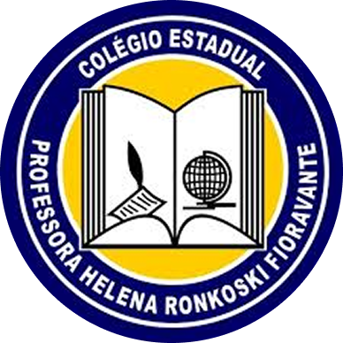

O Colégio Estadual Professora Helena Ronkoski Fioravante - Ensino Fundamental e Médio iniciou suas atividades educacionais no dia 15 de fevereiro de 1993, autorizada pela Resolução n° 4.873/92 de 17 de dezembro de 1992, publicada no Diário Oficial n° 3.921 de 31 de dezembro de 1992, com 05 turmas de 5ª série, e as demais séries foram implantadas gradativamente.
Nosso Objetivo: Garantir aos alunos um futuro brilhante. 